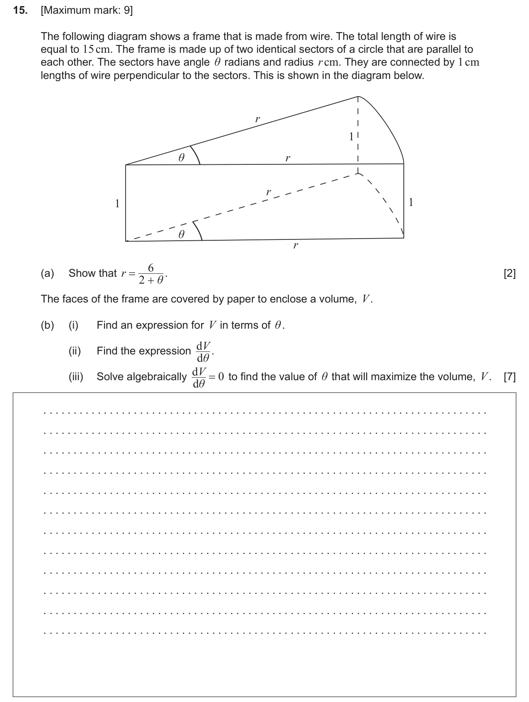
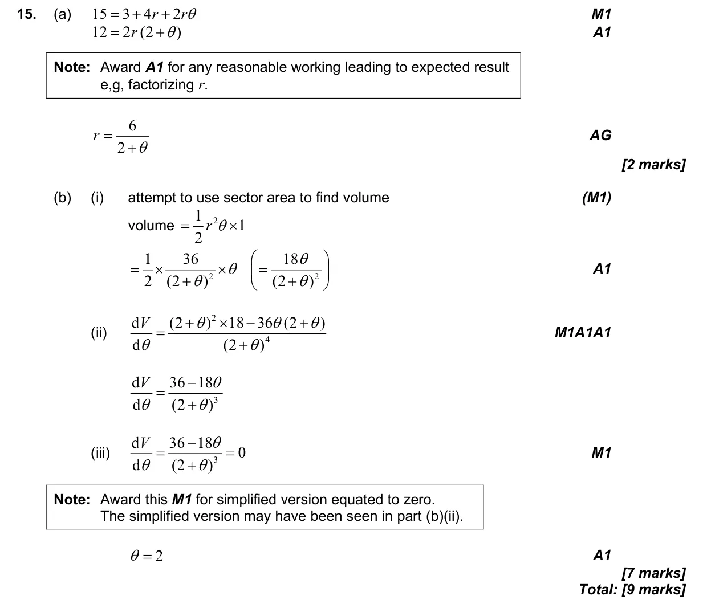

9 marks P1 TZ0 Calculator 3.7 Radian measure5.7 Optimisation in context5.9 Further differentiation: standard derivatives, chain, product and quotient rules, related rates Question Hide breakdown ab Markscheme 